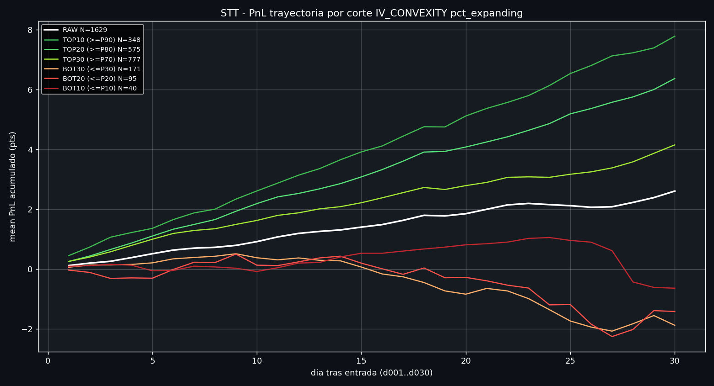
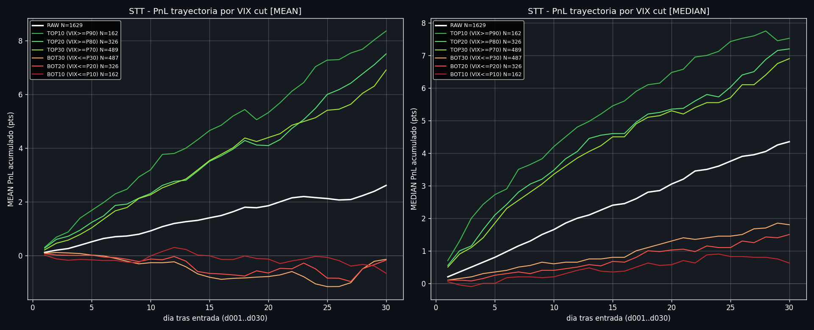
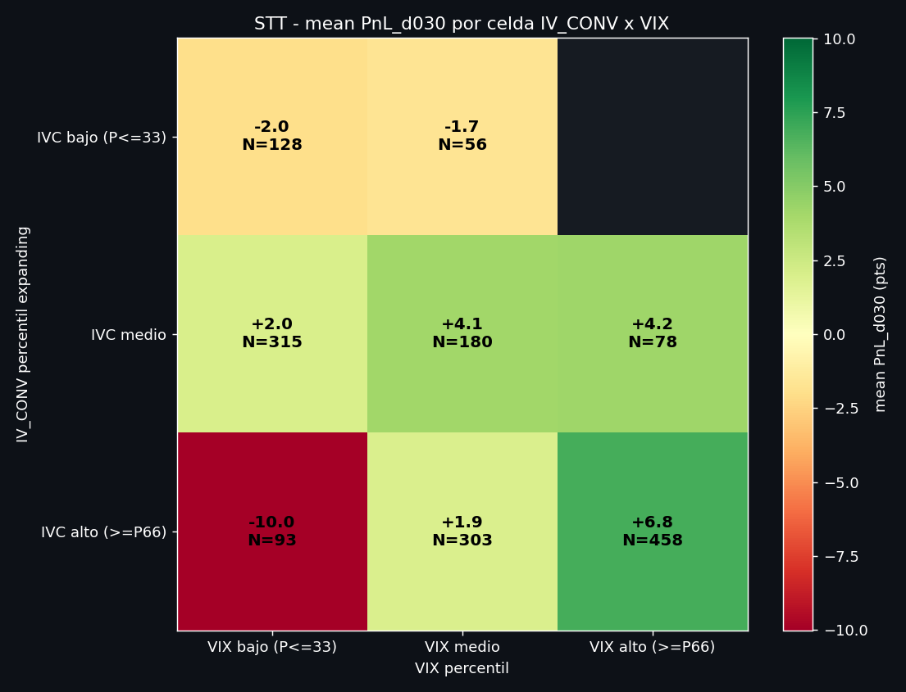
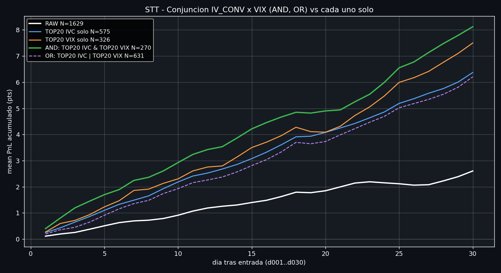
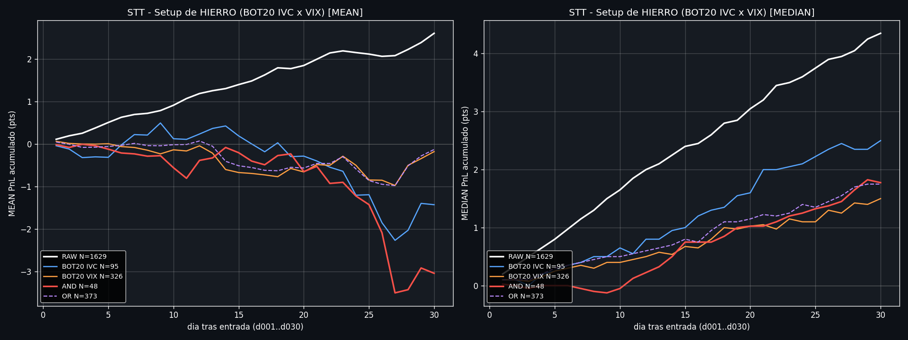

(iv_k1 + iv_k3)/2 - iv_k2 sobre las 3 patas PUT del BWB.
Mide la concavidad de la smile de puts (Werner). Alta = body K2 IV deprimido respecto
a las alas K1/K3 (smile pinch-down). Se rankea por percentil expanding (sin lookahead) contra todo el
historico STT V9 (2019-2025, 1.629 trades, 1.223 dias). FAVORABLE ≥ 80 (concavidad
alta), ADVERSO ≤ 20 (smile lineal), NEUTRAL 20-80.
Cohortes definidas por percentil expanding del IV_CONV al dia de entrada. RAW es el universo entero (sin filtro).
mean d001-d030 es el promedio de los 30 PnL diarios; edge es la diferencia vs RAW.
| Corte | N | dias | d020 | d030 | avg d1-d30 | edge avg | WR d030 | PF d030 | ||||
|---|---|---|---|---|---|---|---|---|---|---|---|---|
| mean | med | mean | med | mean | med | mean | med | |||||
Doble panel: mean (sensible a cola/outliers) y median (tendencia central robusta). Los charts de abajo replican ambos.

Mismo formato, ahora con VIX al dia de entrada (percentil rank simple sobre el universo). Notese que VIX en aislamiento tiene mas edge que IV_CONV: la mayor parte del aparente edge de IV_CONV en bulk era VIX riding.
| Corte | N | dias | d020 | d030 | avg d1-d30 | edge avg | WR d030 | PF d030 | ||||
|---|---|---|---|---|---|---|---|---|---|---|---|---|
| mean | med | mean | med | mean | med | mean | med | |||||

Particionamos IV_CONV pct y VIX pct en bajo/medio/alto (terciles) y cruzamos. Solo se muestran celdas con N≥20 trades. Vease el heatmap para localizar la celda de oro.
| Cohorte | N | dias | d020 | d030 | avg d1-d30 | edge avg | WR d030 | PF d030 | ||||
|---|---|---|---|---|---|---|---|---|---|---|---|---|
| mean | med | mean | med | mean | med | mean | med | |||||
La celda IVC alto & VIX bajo (mean d030 -10.0) es el unico cuadro rojo del panel MEAN. En el panel MEDIAN se vuelve +2.5: la -10 es artefacto de 8 trades pre-COVID (feb-2020). Vease heatmap dual.

Comparativa directa: cada senal sola, su interseccion (AND) y su union (OR). Setup de oro = AND: cuando ambos estan en su TOP20%, edge maximo. OR es menos selectivo pero mas grande.
| Cohorte | N | dias | d020 | d030 | avg d1-d30 | edge avg | WR d030 | PF d030 | ||||
|---|---|---|---|---|---|---|---|---|---|---|---|---|
| mean | med | mean | med | mean | med | mean | med | |||||

El reverso del Setup de Oro: cada senal en su BOT20% (concavidad baja / VIX bajo), su interseccion (AND) y su union (OR). Setup de Hierro = AND: ambos en su peor quintil simultaneamente. Es la cohorte a EVITAR.
| Cohorte | N | dias | d020 | d030 | avg d1-d30 | edge avg | WR d030 | PF d030 | ||||
|---|---|---|---|---|---|---|---|---|---|---|---|---|
| mean | med | mean | med | mean | med | mean | med | |||||
